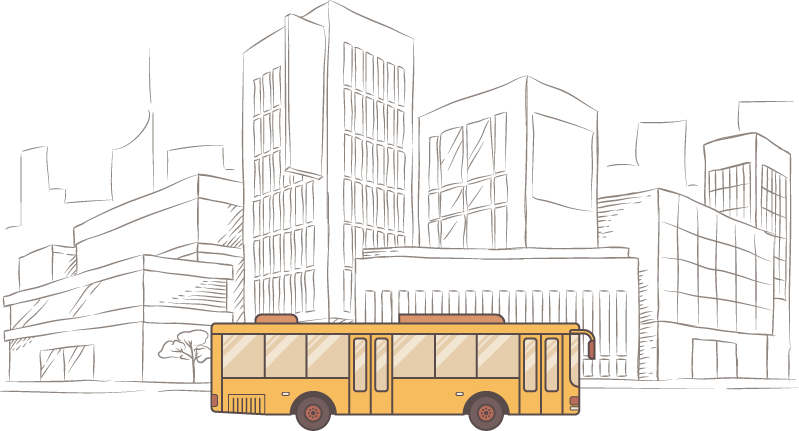

台 灣 搭 公 車

查詢附近
公車站牌
公共單車
使用查詢附近服務需先打開定位服務
讓本網站取用您的位置
查詢公車
雙北
桃園市
台中市
台南市
高雄市
公路客運
其他
已存路線
![公車站牌按鈕圖片]()
![公共單車按鈕圖片]()